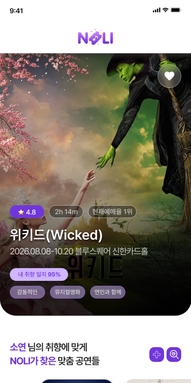
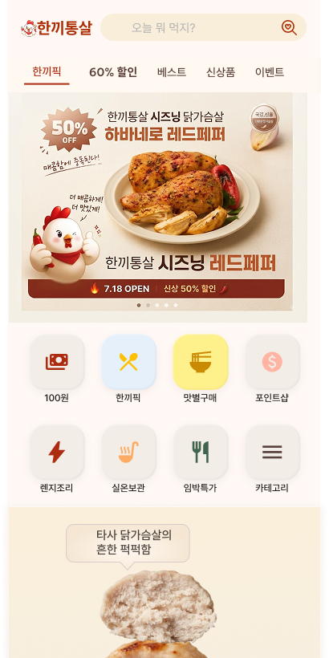

 Web App · In Progress 🎫 NOLI 취향 기반 공연 큐레이션 앱 — 맞춤 추천, 티켓 오픈 알림, 관람 리포트로 일상에 문화를 더합니다. PARTICIPATION1인 기획·개발 STACKReact · TypeScript ROLEPlan · Design · FE STATUSIn Progress GO → GITHUB → PITCH → NOTION → DESIGN →
 E-Commerce · In Progress 🍗 한끼통살 닭가슴살 다이어트 식단 쇼핑 앱 — 취향에 맞는 식단을 간편하게 담고, 소셜 로그인과 간편결제로 건강한 한 끼를 더 쉽게 챙길 수 있도록 돕습니다. PARTICIPATION1인 기획·개발 STACKHTML5 · CSS3 · JS ROLEPlan · Design · FE STATUSIn Progress GO → GITHUB → NOTEPOLIO → NOTION → DESIGN →
Landing Page · In Progress 🌳 한국환경공단 한국환경공단 리뉴얼 랜딩페이지 — 매립지가 생태공원으로, 폐기물이 자원으로 순환하는 과정을 스크롤 한 번으로 경험하는 몰입형 환경 스토리텔링 사이트입니다. PARTICIPATION1인 기획·개발 STACKReact · Vite · GSAP ROLEPlan · Design · FE STATUSIn Progress GO → GITHUB → NOTION →